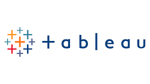

I hold a Master of Science in Computer Engineering (Data Science) from San Jose State University. I am a research-focused software engineer with a background in enterprise application development and data-driven problem solving. My research interests lie at the intersection of machine learning, healthcare AI, trustworthy AI, and deep reinforcement learning.
I am passionate about developing interpretable, fair, and effective AI systems for real-world applications in high-stakes domains. Currently, I am exploring machine learning approaches for healthcare prediction and optimization problems, with particular interest in federated learning and explainable AI. I am preparing applications for PhD programs in Machine Learning and Computer Science.
A Machine Learning Approach to Predicting Diabetes Using Healthcare Data
TechRxiv Preprint, 2025
This work investigates machine learning methods for predicting diabetes using healthcare datasets. We compare multiple predictive models including logistic regression, random forests, and gradient boosting approaches to identify the most effective methods for diabetes risk prediction.
Smart Scheduler Design Using Deep Reinforcement Learning
San Jose State University
- Worked with semiconductor wafer manufacturing datasets from Lam Research.
- Developed a Deep Neural Network to optimize scheduling decisions and improve throughput.
- Implemented reinforcement learning strategies to avoid deadlock conditions and maximize processing efficiency.
- Achieved strong predictive performance with Pearson Correlation = 0.962 and RMSE = 1.207.
Key Technologies: Deep Reinforcement Learning, Deep Neural Networks, throughput optimization, semiconductor manufacturing data analysis
Graduate Scholar
University of California, Merced (2020–2021)
Contributed to research projects focused on data science, documented research findings, collaborated on publications, and communicated results to academic and industry audiences.
UPS - Senior Software Development Engineer
2021 - 2024
Led development of enterprise applications using Angular, Spring Boot, Kubernetes, AWS, and GCP. Developed cloud-native solutions for UPS Flight Crew Systems and implemented secure, scalable software architectures supporting logistics operations.
Wiser Solutions - QA Data Analyst
2019 - 2021
Analyzed data quality and system performance metrics. Designed and executed data validation processes and contributed to analytics pipelines supporting business intelligence operations.
In this project we use SQL Server to explore global COVID-19 data and analyze trends across regions and time periods.

Interactive data visualizations and dashboards exploring various datasets through visual analytics.